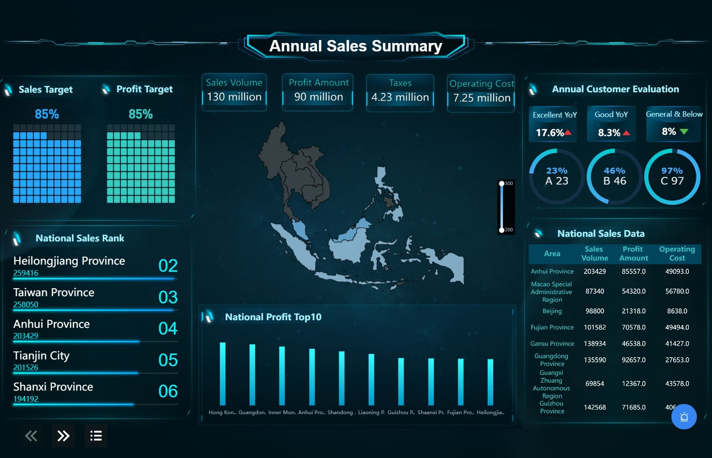
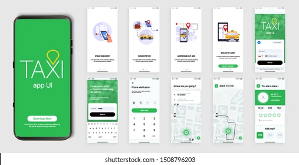
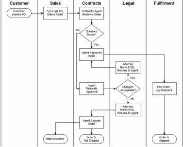
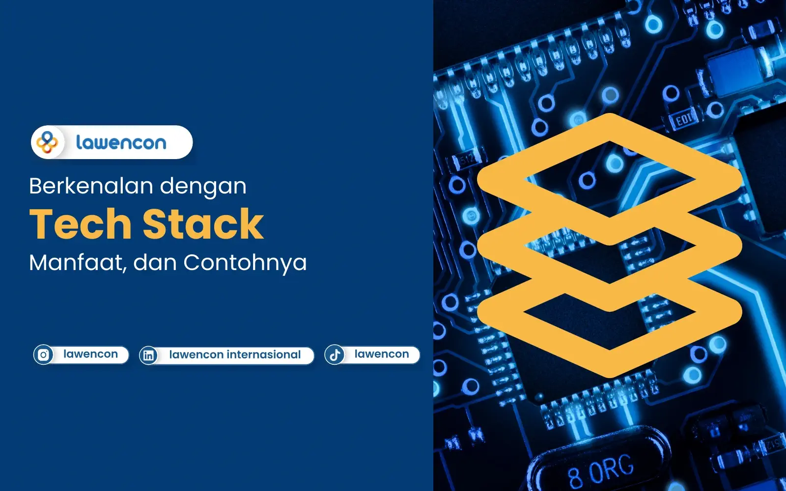
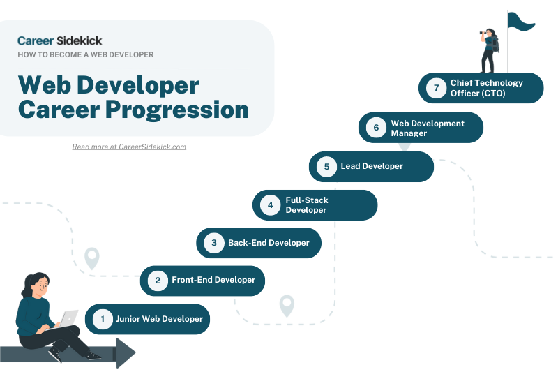

Portfolio & Project Gallery

Website Modern – Mockup Tampilan Bersih & Profesional

Dashboard Web App – Monitoring Data & Analitik

Mobile App UI – Desain Aplikasi Mobile Modern

Coding Setup – Lingkungan Pengembangan & IDE

Flowchart Sistem – Perancangan Database & Proses

Portfolio Showcase – Kumpulan Proyek Digital
Side Project Kreatif – Ide & Eksperimen Coding

Tech Stack – Tools & Bahasa Pemrograman Favorit

Career Goals – Aspirasi Menjadi Web Developer